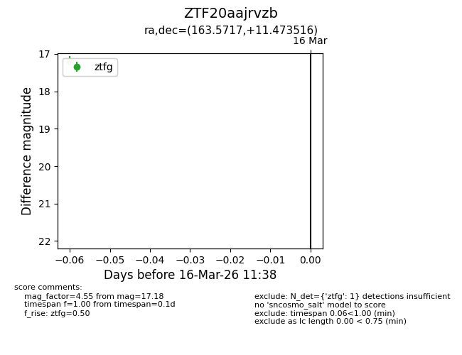
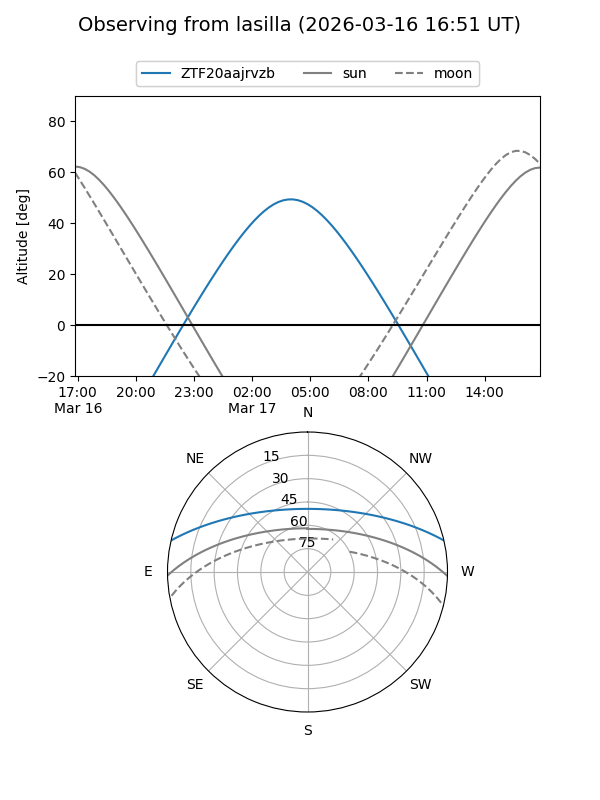
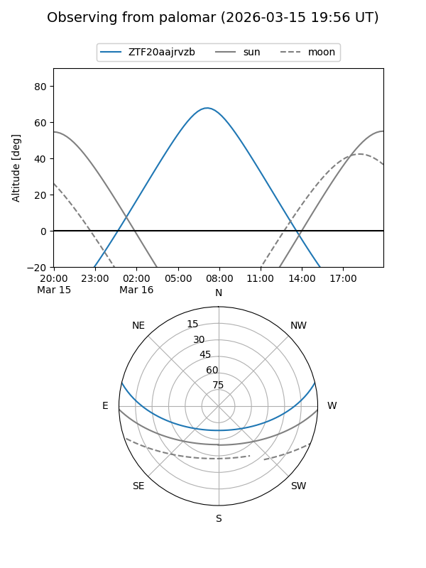

ZTF20aajrvzb
Target ZTF20aajrvzb at 2026-03-16 11:40
Aliases and brokers:
FINK: link
Lasair: link
ALeRCE: link
alt names
ZTF20aajrvzb (ztf,fink_ztf)
Coordinates:
equatorial (ra, dec) = 163.5717,+11.47352
equatorial (HMS+DMS) = 10:54:17.21,+11:28:24.66
galactic (l, b) = (236.8587,+58.36588)
Flags:
Photometry:
last ztfg=17.18
1 ztfg detections
Lightcurve

Visibility


Additional plots